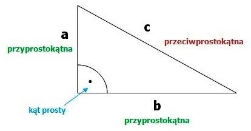
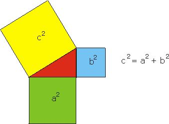
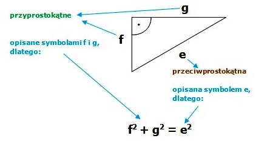
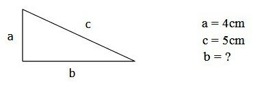
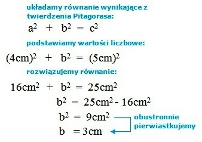

TWIERDZENIE PITAGORASA
Twierdzenie Pitagorasa dotyczy trójkąta prostokątnego, to znaczy takiego, który ma jeden kąt prosty. W trójkącie prostokątnym boki, które tworzą kąt prosty, nazywamy przyprostokątnymi, a trzeci bok nazywamy przeciwprostokątną.


Twierdzenie Pitagorasa mówi o tym, że jeżeli trójkąt jest prostokątny, to suma kwadratów długości jego przyprostokątnych, jest równa kwadratowi długości jego przeciwprostokątnej.
W praktyce, oznacza to, że dla każdego trójkąta prostokątnego, możemy zapisać równość:
UWAGA: Nie zapisujmy powyższego równania bezmyślnie. Będzie wyglądało inaczej, jeżeli w zadaniu poszczególne boki będą miały inne oznaczenia. Należy zawsze zwrócić uwagę, gdzie w trójkącie jest kąt prosty, a więc które boki to przyprostokątne.
Przykład:

Gdy już ułożymy równanie dla danego trójkąta prostokątnego, należy podstawić wartości liczbowe i rozwiązać równanie, w wyniku czego otrzymujemy długość nieznanego boku.
Przykład:
Jedna z przyprostokątnych w pewnym trójkącie prostokątnym ma długość 4cm. Oblicz długość drugiej przyprostokątnej, jeżeli przeciwprostokątna ma długość 5cm.
Dane:


UWAGA: Za pomocą twierdzenie Pitagorasa możemy obliczyć długość danego boku, tylko wtedy, gdy dwa pozostałe boki są znane (jak w powyżej przedstawionym przykładzie)